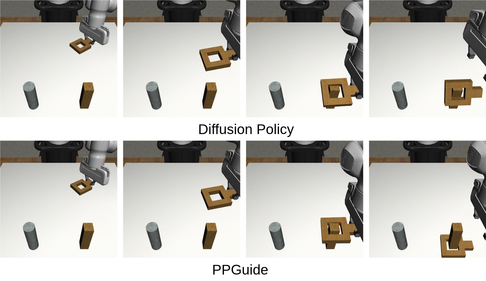
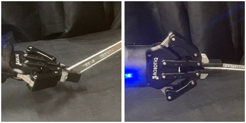
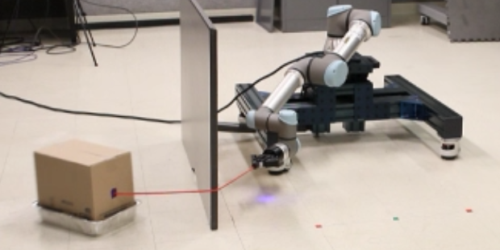

Zixing Wang
Pronounced as Zee-Shing
I am a Ph.D. student at the Department of Computer Science at Purdue University, advised by Prof. Ahmed H. Qureshi. Previously, I received my Master in Robotics and Bachelor in Computer Science from the University of Minnesota, where I worked with Prof. Nikolaos Papanikolopoulos.
I'm broadly interested in robot learning, especially in the areas of generalizable manipulation policies, novel objects manipulation, and robot tool use.
Updates
[05/2025] The paper "Dynamic Robot Tool Use with Vision Language Models" is accepted by the RSS 2025 R3 Workshop
[04/2025] I will intern at Mitsubishi Electric Research Laboratories (MERL) this summer.
[01/2025] Our paper "Implicit Physics-aware Policy for Dynamic Manipulation of Rigid Objects via Soft Body Tools" is accepted by ICRA 2025.
[01/2025] Our paper "DeRi-IGP: Manipulating Rigid Objects Using Deformable Objects via Iterative Grasp-Pull" is accepted by RA-L.
View Older News
[10/2023] The short paper "DeRi-Bot: Learning to Collaboratively Manipulate Rigid Objects via Deformable Objects" is accepted by CoRL 2023 workshop on L4SR.
[08/2023] The paper "DeRi-Bot: Learning to Collaboratively Manipulate Rigid Objects via Deformable Objects" is accepted by RA-L and will be presented in ICRA 2024.
[06/2023] The paper "Efficient Q-Learning over Visit Frequency Maps for Multi-agent Exploration of Unknown Environments" is accepted by IROS 2023.
Research

PPGuide: Steering Diffusion Policies with Performance Predictive Guidance
Under review

Dynamic Robot Tool Use with Vision Language Models
Under review
RSS 2025 workshop on Reasoning for Robust Robot Manip in the Open World
RSS 2025 workshop on Reasoning for Robust Robot Manip in the Open World

Implicit Physics-aware Policy for Dynamic Manipulation of Rigid Objects via Soft Body Tools
ICRA 2025

DeRi-IGP: Manipulating Rigid Objects Using Deformable Objects via Iterative Grasp-Pull
RA-L (2024)

DeRi-Bot: Learning to Collaboratively Manipulate Rigid Objects via Deformable Objects
RA-L (2023) appearing at ICRA 2024
CoRL 2023 workshop on Learning for Soft Robots (Spotlight)
CoRL 2023 workshop on Learning for Soft Robots (Spotlight)

AnyPose: Anytime 3D Human Pose Forecasting via Neural Ordinary Differential Equations
Arxiv 2309.04840

Efficient Q-Learning over Visit Frequency Maps for Multi-agent Exploration of Unknown Environments
IROS 2023

Spatial Action Maps Augmented with Visit Frequency Maps for Exploration Tasks
IROS 2021

Estimating Pedestrian Crossing State Based on Single 2D Body Pose
IROS 2020

ECO: Egocentric Cognitive Mapping
arxiv 1812.00312
Education
-
Purdue University, West Lafayette, IN, USA
Department of Computer Science
Ph.D. Student
Expected Dec 2026 / May 2027

-
University of Minnesota, Twin Cities, Minneapolis, MN, USA
Minnesota Robotics Institute (MnRI)
Master of Science in Robotics
Degree awarded in Dec. 2021

-
University of Minnesota, Twin Cities, Minneapolis, MN, USA
Department of Computer Science and Engineering
Bachelor of Arts in Computer Science
Degree awarded in May. 2020

Experiences
-
Mitsubishi Electric Research Laboratories (MERL)
Cambridge, MA, USA
Research Intern
May. 2024 to Aug. 2024
-

Reviewer Service
- IEEE/RSJ International Conference on Intelligent Robots and Systems (IROS)
- IEEE International Conference on Robotics and Automation (ICRA)
- Conference on Robot Learning (CoRL)